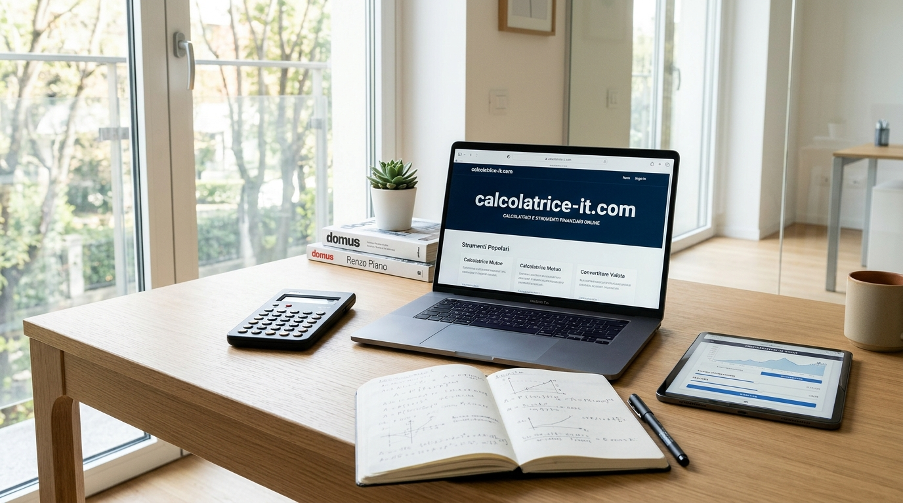
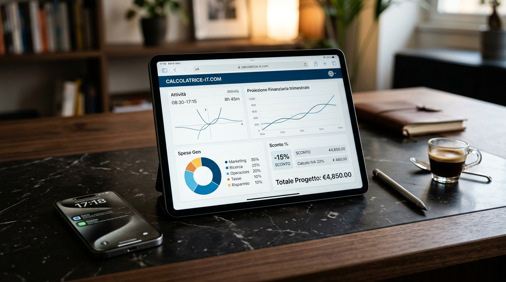

Viviamo immersi in un ecosistema digitale di straordinaria densità tecnologica. Ogni smartphone nelle nostre tasche integra un'applicazione per fare i conti, i sistemi operativi per computer dispongono di widget nativi pronti all'uso, e persino i principali motori di ricerca consentono di digitare operazioni algebriche di base direttamente all'interno della barra degli indirizzi. Davanti a una simile capillarità computazionale, appare legittimo porsi una domanda di fondo: per quale ragione milioni di studenti, professionisti, ricercatori e famiglie in Italia continuano a preferire quotidianamente l'impiego di una suite specialistica di calcolo accessibile direttamente via browser?
La risposta risiede nell'abisso concettuale che separa un calcolo aritmetico improvvisato dalla necessità di fruire di algoritmi dedicati, trasparenti, conformi alle normative contabili e capaci di elaborare strutture numeriche complesse senza alcuna frizione operativa. Gli strumenti generici integrati nei telefoni o nelle calcolatrici fisiche a quattro operazioni risalgono, nella loro impostazione concettuale, ai display a cristalli liquidi a segmenti degli anni Settanta. Sebbene efficaci per dividere velocemente l'importo di una cena tra amici, tali strumenti evidenziano vulnerabilità e limiti insormontabili nel momento in cui l'utente deve affrontare problemi concreti di gestione contabile, frazionaria, temporale o fiscale.
Quali sono i limiti strutturali delle calcolatrici tradizionali e delle app native?
Per cogliere appieno l'importanza della computazione via browser moderna, è fondamentale compiere un'analisi rigorosa dei problemi che caratterizzano gli strumenti convenzionali. Quando un utente esegue operazioni di calcolo critiche, l'interfaccia non è semplicemente un supporto visivo, ma l'intermediario logico tra l'intenzione matematica dell'individuo e il risultato numerico ottenuto. La rigidità degli strumenti legacy si manifesta principalmente in tre aree critiche:
1. Perché il buffer di memoria a registro cieco (M+, M-, MR) genera errori sistematici?
Nelle calcolatrici tascabili tradizionali e nelle relative trasposizioni digitali per smartphone, la conservazione dei risultati parziali è affidata a una memoria cieca gestita tramite i pulsanti convenzionali M+, M- e MR. Questo paradigma impone all'operatore un sovraccarico cognitivo ingiustificato: l'utente è costretto a ricordare a memoria quale operazione abbia originato il valore salvato nel registro provvisorio. Un singolo tocco accidentale su un pulsante di cancellazione azzera l'intero accumulo, senza che rimanga traccia dell'operazione, costringendo a ripetere la sequenza da capo con un margine di errore inevitabilmente moltiplicato.
2. Perché i display lineari a riga singola violano la gerarchia visiva delle formule?
La matematica non è un linguaggio puramente sequenziale; essa vive di strutture spaziali bidimensionali. Le frazioni sono caratterizzate da numeratori e denominatori sovrapposti, le potenze richiedono esponenti posizionati all'apice, e le espressioni algebriche articolate necessitano di parentesi nidificate per stabilire la priorità gerarchica delle operazioni (secondo i canoni universali BODMAS e PEMDAS). Una calcolatrice generica costringe invece l'utente a trascrivere tali formule in una striscia lineare orizzontale, aumentando esponenzialmente il rischio di fraintendere la precedenza tra prodotti, quozienti ed esponenziali.
3. Perché l'aritmetica in base dieci entra in conflitto con grandezze sessagesimali e finanziarie?
Il difetto concettuale più rilevante risiede nell'applicazione indiscriminata dell'aritmetica decimale standard a parametri che rispondono a sistemi numerici differenti. Il tempo cronologico, ad esempio, non opera in base dieci, bensì su base sessagesimale (sessanta secondi per minuto, sessanta minuti per ora). Quando un professionista sottrae un orario di ingresso lavorativo da un orario di uscita utilizzando un'app ordinaria, ottiene numeri con la virgola che non corrispondono in alcun modo alla reale durata dei minuti trascorsi, provocando gravi discrepanze nella compilazione dei fogli presenze e nella quantificazione degli straordinari retribuiti.
Come la calcolatrice online moderna ha ridefinito l'efficienza matematica via web?
L'evoluzione degli standard del World Wide Web ha trasformato le pagine Internet da semplici documenti statici a veri e propri motori di computazione scientifica ad altissimo rendimento. Attraverso l'adozione di JavaScript moderno (ECMAScript di ultima generazione), motori V8 ottimizzati e strutture a fogli di stile reattive (CSS Grid e Flexbox), una calcolatrice online avanzata è oggi in grado di erogare calcoli deterministici in frazioni millesimali di secondo, operando interamente lato client sul dispositivo dell'utente.
Questo paradigma tecnologico offre una combinazione unica di vantaggi irrinunciabili:
- Esecuzione Deterministica Senza Latenza: L'esecuzione locale dei calcoli garantisce che non vi sia alcun tempo di attesa legato a chiamate API verso server esterni, assicurando calcoli immediati anche con connessioni deboli.
- Visualizzazione Integrale dell'Audit Trail: L'utente ha sempre sott'occhio la cronologia continua delle operazioni eseguite, potendo revisionare e correggere singoli valori intermedi senza azzerare l'intero processo.
- Zero Frizioni e Privacy Assoluta: Nessuna registrazione forzata, nessuna richiesta di credenziali o tracciamento delle attività personali: la computazione web moderna mette l'utilità pura al centro dell'esperienza d'uso.
Massima Metodologica del Calcolo Digitale: La precisione di uno strumento analitico non si misura soltanto dalla correttezza del decimale restituito, ma dalla sua capacità di prevenire l'errore umano attraverso interfacce ergonomiche, intuitive e prive di passaggi cognitivi inutili.
Quali sono i campi di applicazione in cui il calcolo specialistico risulta indispensabile?
Per comprendere appieno la portata pratica di una suite computazionale specialistica, è opportuno analizzare dettagliatamente le principali macro-categorie numeriche affrontate ogni giorno da studenti, imprenditori e professionisti in Italia:
A. L'Aritmetica e la Matematica Accademica: Dalle Frazioni alle Radici Quadrate
Nel percorso educativo di ogni ordine e grado, la matematica rappresenta spesso una sfida complessa proprio a causa della difficoltà di visualizzare chiaramente i passaggi intermedi. Gli strumenti dedicati consentono di affrontare tematiche algebriche con un livello di dettaglio ineguagliabile:
- Gestione delle Frazioni Proprie e Improprie: Svolgere addizioni, sottrazioni, moltiplicazioni e divisioni frazionali mantenendo esplicito il minimo comune multiplo (mcm) e il massimo comune divisore (MCD), permettendo agli studenti di apprendere la logica della semplificazione anziché limitarsi a osservare un anonimo numero decimale periodico.
- Estrazione di Radici ed Esponenziali: Risoluzione istantanea di radici quadrate, cubiche e frazionarie complesse, essenziali per la risoluzione di teoremi geometrici (come il Teorema di Pitagora) e problemi di trigonometria piana.
- Algoritmi di Risoluzione delle Equazioni: Scomposizione guidata di equazioni algebriche di primo e secondo grado, con determinazione immediata del discriminante (Δ) per l'analisi delle radici reali e coincidenti.

B. La Finanza Personale e la Conformità Fiscale Italiana
Nell'ambito economico e tributario, la correttezza numerica è un dovere civico e contabile imprescindibile per proteggere i propri risparmi ed evitare sanzioni amministrative. Il quadro normativo italiano presenta esigenze contabili ben definite che richiedono algoritmi tarati su base nazionale:
- Scorporo e Calcolo dell'IVA al 22%: La determinazione dell'imponibile netto partendo da un prezzo lordo comprensivo di Imposta sul Valore Aggiunto richiede l'applicazione rigorosa della formula di scorporo inversa (Imponibile = Totale / 1,22). Un errore di pochi centesimi su fatture ad alto importo può compromettere la conformità delle liquidazioni periodiche IVA.
- Piani di Ammortamento dei Mutui (Metodo Francese): Stimare l'andamento di un mutuo a tasso fisso o variabile significa analizzare come si modifichi mese dopo mese il rapporto tra la quota capitale e la quota interessi all'interno di ciascuna rata periodica, consentendo alle famiglie di valutare con lucidità la convenienza di estinzioni anticipate o surroghe.
- Calcolo del Bollo Auto e Stima dei Consumi: Determinare il costo chilometrico reale del carburante in funzione dei chilowatt (kW) o cavalli vapore (CV) del veicolo e della classe ambientale (da Euro 4 a Euro 6), ottimizzando i rimborsi chilometrici nelle note spese aziendali.
- Stima dello Stipendio Netto dal Lordo: Comprensione analitica degli scaglioni di reddito IRPEF, delle detrazioni per lavoro dipendente e dei contributi previdenziali INPS per prevedere con precisione l'effettiva disponibilità economica mensile.
Imponibile Netto = Totale Lordo ÷ 1,22
Quota IVA = Totale Lordo − Imponibile Netto
C. Il Calcolo del Tempo, dei Turni e la Notazione Sessagesimale
Con la metamorfosi del mercato del lavoro, sempre più orientato al lavoro agile, al freelancing e a turnazioni flessibili, il monitoraggio accurato delle ore dedicate a ciascuna commessa è divenuto prioritario per garantire una retribuzione equa:
- Sommatoria di Ore e Minuti Consecutivi: Calcolo immediato delle ore lavorate su più giorni o fasce orarie distinte, con riporto automatico dei minuti eccedenti la soglia di 60 nel computo delle ore intere.
- Conversione in Ore Decimali per Buste Paga: Traduzione esatta della frazione di minuti nel corrispondente formato decimale contabile (ad esempio, 7 ore e 45 minuti corrispondono esattamente a 7,75 ore contabili), eliminando le tipiche contestazioni su cedolini e fatture elettroniche.
- Calcolo dei Giorni Lavorativi Netti tra Due Date: Determinazione dell'intervallo temporale effettivo escludendo sabati, domeniche e festività nazionali per la stipula di contratti di fornitura e il rispetto dei termini di consegna.
- Notazione Angolare e Astronomica: Conversione tra gradi decimali e notazione gradi-primi-secondi (DMS) per applicazioni topografiche, nautiche e cartografiche.
Quali criteri distinguono una piattaforma computazionale d'eccellenza da un portale amatoriale?
Non tutti i portali di calcolo reperibili sulla rete offrono la medesima garanzia di accuratezza metodologica. Prima di inserire una risorsa nella propria barra dei segnalibri o farvi affidamento per scopi professionali, è fondamentale verificare la presenza di quattro requisiti tecnici essenziali:
- Garanzia di Precisione floating-point e Arrotondamento Standard: I linguaggi di programmazione moderni soffrono talvolta di anomalie di rappresentazione binaria in virgola mobile (come la celebre anomalia per cui 0.1 + 0.2 non produce esattamente 0.3). I motori di calcolo professionali integrano librerie di aritmetica a precisione arbitraria che azzerano tali imprecisioni prima della visualizzazione a schermo.
- Design Ergonomico e Responsività Mobile Totale: Lo strumento deve consentire una digitazione rapida e confortevole sia attraverso mouse e tastiera fisica su monitor widescreen, sia tramite pressione digitale su display touchscreen di dispositivi compatti con una sola mano.
- Chiarezza Tipografica e Display a Contrasto Elevato: La differenziazione cromatica tra operatori logici, numeri, virgole decimali e tasti di cancellazione riduce drasticamente il rischio di sviste visive durante la digitazione prolungata.
- Trasparenza Etica e Nessun Vincolo di Registrazione: Un servizio orientato alla produttività reale non deve interrompere il flusso di lavoro dell'utente con annunci pubblicitari ingannevoli, pop-up invadenti o l'obbligo di fornire dati anagrafici per sbloccare funzionalità basilari.
Come la consapevolezza numerica migliora il processo decisionale quotidiano?
In un contesto sociale ed economico caratterizzato da una complessità crescente e da una costante proliferazione di dati numerici, la padronanza del calcolo pratico non rappresenta un mero esercizio teorico, ma un pilastro essenziale di libertà e lucidità decisionale. Chi possiede gli strumenti per verificare autonomamente, in pochi secondi e senza sostenere costi, la correttezza di una bolletta energetica, la trasparenza di un tasso d'interesse bancario o il computo delle proprie ore lavorative acquisisce una protezione fondamentale contro raggiri, inefficienze e sprechi economici.
La calcolatrice online moderna incarna l'espressione più democratica, matura e funzionale della tecnologia al servizio dell'essere umano: uno strumento silenzioso, potente e sempre accessibile che restituisce a ciascuno di noi la certezza assoluta dei propri numeri.